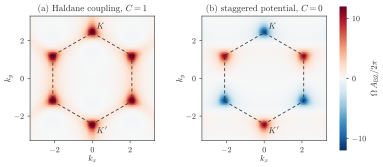
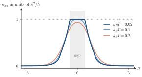
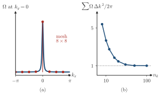

Advanced Quantum Materials 2027 · All lectures · Lecture notes
Session 3. Topological Band Structure Theory
3.5 The Berry curvature, and why the Hall conductivity is an integer
The Kubo formula (3.2) has the band energies in its denominator. Does the Hall conductivity then depend on the details of the band structure? We will now see that it does not. The energies cancel, and what remains is an integral over the Brillouin zone that is built only from the wavefunctions, and that is an integer for a gapped system.
\[\sigma_{xy} \;\propto\; \sum_{n\ \text{filled}} \sum_{m\ \text{empty}} \int_{\text{BZ}} \frac{d^2k}{(2\pi)^2}\; \frac{\langle n|\partial_{k_x}H|m\rangle\langle m|\partial_{k_y}H|n\rangle - (x\leftrightarrow y)} {(\varepsilon_n - \varepsilon_m)^2}. \tag{3.2}\]
This is the Kubo formula of Section 3.4 for the Hall conductivity. The states \(|n\rangle\) are the Bloch states \(|u_n(k)\rangle\) with energies \(\varepsilon_n(k)\). The bands \(n\) are filled and the bands \(m\) are empty, and \(\partial_{k_x}H\) is the velocity operator along \(x\), up to a factor \(\hbar\).
We take the derivative of the Schrödinger equation \(H(k)|u_n(k)\rangle = \varepsilon_n(k)|u_n(k)\rangle\) with respect to \(k_\mu\) and project it onto a different band \(\langle u_m(k)|\), with \(m \neq n\), which gives
\[\langle u_m|\partial_{k_\mu} H|u_n\rangle = \big(\varepsilon_n(k) - \varepsilon_m(k)\big)\,\langle u_m|\partial_{k_\mu} u_n\rangle. \tag{3.3}\]
This identity is the piece that we need, since it replaces a matrix element of \(\partial_k H\) by a matrix element of the \(k\)-derivative of the wavefunction, divided by the energy difference. When we use (3.3) to rewrite the numerator and the denominator of (3.2) together, the explicit dependence on the energies cancels completely. What remains is an object built only from overlaps of wavefunctions, which is called the Berry curvature of band \(n\),
\[\Omega_n(k) = -2\,\mathrm{Im}\, \langle \partial_{k_x} u_n(k)|\partial_{k_y} u_n(k)\rangle.\]
The Hall conductivity of a set of filled bands is
\[\sigma_{xy} = \frac{e^2}{h}\, C, \qquad C = \sum_{n\ \text{filled}} \frac{1}{2\pi}\int_{\text{BZ}} \Omega_n(k)\, d^2k. \tag{3.4}\]
It is built only from the wavefunctions, through the Berry curvature \(\Omega_n(k)\), and not from the band energies. For a gapped system \(C\) is an integer.
The steps From the Kubo formula (3.2) to the Chern number (3.4)
We write \(|n\rangle\) for \(|u_n(k)\rangle\) and \(\partial_\mu\) for \(\partial_{k_\mu}\), with \(\mu=x,y\). The first step is the identity (3.3). We take the derivative of \(H|n\rangle=\varepsilon_n|n\rangle\) with respect to \(k_\mu\),
\[(\partial_\mu H)|n\rangle + H|\partial_\mu n\rangle = (\partial_\mu\varepsilon_n)|n\rangle + \varepsilon_n|\partial_\mu n\rangle,\]
and we multiply it from the left by \(\langle m|\) with \(m\neq n\). Since \(\langle m|H=\varepsilon_m\langle m|\) and \(\langle m|n\rangle=0\), the term with \(\partial_\mu\varepsilon_n\) drops, and what is left is (3.3). Its complex conjugate is
\[\langle n|\partial_\mu H|m\rangle = \big(\varepsilon_n-\varepsilon_m\big)\,\langle \partial_\mu n|m\rangle.\]
The second step is to put these two relations into the numerator of (3.2). Each of the two matrix elements gives one factor \(\varepsilon_n-\varepsilon_m\), so
\[\frac{\langle n|\partial_x H|m\rangle\langle m|\partial_y H|n\rangle}{(\varepsilon_n-\varepsilon_m)^2} = \langle \partial_x n|m\rangle\langle m|\partial_y n\rangle,\]
meaning that the energies are gone and only overlaps of wavefunctions remain.
The third step is the sum over the empty bands \(m\). Let us take the simplest case, which is a single filled band \(n\). The empty bands are then all the other bands, so \(\sum_{m\neq n}|m\rangle\langle m| = 1-|n\rangle\langle n|\), and
\[\sum_{m\neq n}\langle \partial_x n|m\rangle\langle m|\partial_y n\rangle = \langle \partial_x n|\partial_y n\rangle - \langle \partial_x n|n\rangle\langle n|\partial_y n\rangle.\]
The state is normalized, \(\langle n|n\rangle=1\), and the derivative of this relation shows that \(\langle n|\partial_\mu n\rangle\) is purely imaginary. We write it as \(i a_\mu\) with \(a_\mu\) real. The last term above is then \((-ia_x)(ia_y)=a_xa_y\), which does not change when we exchange \(x\) and \(y\). So it cancels in the combination of (3.2), which is antisymmetric under this exchange, and what remains is
\[\langle \partial_x n|\partial_y n\rangle - \langle \partial_y n|\partial_x n\rangle = 2i\,\mathrm{Im}\,\langle \partial_x n|\partial_y n\rangle = -i\,\Omega_n(k).\]
With several filled bands the terms that we subtract are \(\sum_{n,n'}\langle \partial_x n|n'\rangle\langle n'|\partial_y n\rangle\) over the pairs of filled bands. This sum is also symmetric under the exchange of \(x\) and \(y\), so it cancels in the same way, and each filled band gives its own \(-i\,\Omega_n(k)\).
The last step is the constant in front of (3.2). For the voltage along \(y\) and the current along \(x\) of Section 3.4 it is \(-ie^2/\hbar\). For the voltage along \(x\) and the current along \(y\) it is \(+ie^2/\hbar\), since the exchange of \(x\) and \(y\) changes the sign. Equation (3.4) is written for this second case, so we get
\[\sigma_{xy} = \frac{ie^2}{\hbar}\sum_{n\ \text{filled}}\int_{\text{BZ}}\frac{d^2k}{(2\pi)^2}\,\big(-i\,\Omega_n(k)\big) = \frac{e^2}{2\pi\hbar}\sum_{n\ \text{filled}}\frac{1}{2\pi}\int_{\text{BZ}}\Omega_n(k)\,d^2k = \frac{e^2}{h}\,C,\]
which is (3.4), since \(h=2\pi\hbar\). For the first case the result is \(-(e^2/h)\,C\). The sign also changes if \(\Omega_n\) is defined with the opposite sign, and these are the only two choices that change it. What does not depend on them is that the result is an integer in units of \(e^2/h\), and this integer is what we use in the rest of the course.
This is the central result of the session, and there are two important points about (3.4). First, \(\sigma_{xy}\) depends only on how the wavefunctions change across the Brillouin zone, and not on the energies. We can deform the band structure in any way, and as long as the wavefunctions do not change, the Hall conductivity stays the same.
Second, and more surprising, for a gapped system, which is an insulator, \(C\) is always an integer, regardless of the number of bands and of the shape of the dispersion. This is a topological statement. The Brillouin zone of a two-dimensional system is a compact manifold. It is a torus, since opposite edges of the zone are identified, and the integral of a curvature over a closed surface always gives an integer. The same happens for the Gaussian curvature of an ordinary closed surface in differential geometry.
This integer \(C\) is the Chern number, and (3.4) is the first place in the course where a measurable quantity, the Hall conductivity, is fixed by a topological invariant. As an example, Schematic 3.5 shows the Berry curvature of two gapped honeycomb lattices, which we build in Section 3.10.

berry_curvature_honeycomb.py
h.add_haldane(0.1), which opens a gap of \(0.9\) in units of the first-neighbor hopping. In (b) it comes from a staggered sublattice potential of \(0.5\), with a gap of \(1.0\). The curvature is concentrated at the corners of the zone, which are the Dirac points \(K\) and \(K'\), where the gap is smallest. In (a) it has the same sign at all the corners, and its average gives \(C=1\). In (b) the corners alternate in sign and the average vanishes. Look at the colors of the corners, since the integer comes from their sum.In a Hall bar we measure the Hall resistance. Inside the gap the longitudinal conductivity vanishes, so the Hall resistance is \(1/\sigma_{xy}\), and for \(C=1\) equation (3.4) gives \(h/e^2=25.8\) k\(\Omega\), with no parameter of the material in it. In twisted bilayer graphene aligned to hBN this value is measured at zero magnetic field, within \(0.1\%\), and the quantization stays up to temperatures of several kelvin. The gap that transport gives is about \(27\) K, which is \(2.3\) meV. The measurement is in this article, which is also the one given in the notebook session3.ipynb.
Schematic 3.6 shows the Hall conductivity of the model of panel (a) of Schematic 3.5, when the chemical potential is moved through the gap. It is not the full experiment. There the axis is the electron density, and a plateau in the density needs localized states. The deviation from \(h/e^2\) at higher temperature comes there from the longitudinal conductivity, which this calculation does not have.

hall_conductivity_haldane.py
h.add_haldane(0.1) against the chemical potential \(\mu\), for three temperatures, all in units of the first-neighbor hopping, computed with pyqula. We weight the Berry curvature of each state with its occupation, which is the Fermi function, and integrate over the Brillouin zone. The grey band is the gap, of width \(0.9\). While \(\mu\) is in the gap and \(k_BT\) is much smaller than the gap, the value is \(e^2/h\). For \(k_BT=0.2\), which is \(0.22\) of the gap, the value in the middle of the gap is \(0.94\). Look at the plateau, since its width is the gap and the temperature rounds its edges. Only the part that comes from the Berry curvature is computed, and outside the gap the bands are partly filled and the value is not quantized.The Hall conductivity of a set of filled bands is
\[\sigma_{xy} = \frac{e^2}{h}\sum_{n\ \text{filled}} \frac{1}{2\pi}\int_{\text{BZ}} \Omega_n(k)\, d^2k, \qquad \Omega_n = -2\,\mathrm{Im}\, \langle \partial_{k_x} u_n|\partial_{k_y} u_n\rangle.\]
We change all the band energies. The states \(|u_n\rangle\) do not change, and the gap stays open. What happens to \(\sigma_{xy}\)?
Show the answers
- A. ✗ False
This is false. Take two samples with \(C=1\) and Landau level gaps of 10 meV and 20 meV. Both give \(\sigma_{xy}=e^2/h\), and not values that differ by a factor two.
- B. ✗ False
This is false. Add the same term \(0.3\cos k_x\) to both bands. The eigenvectors are the same, so the Berry curvature is the same and \(C=1\) stays at \(1\).
- C. ✓ True
This is true. The formula contains only the states \(|u_n\rangle\), through the Berry curvature. The energies canceled between the numerator and the denominator of the Kubo formula.
We sum the Berry curvature of a gapped band on a coarse k-mesh. The result is \(C=0.37\). What is the most likely reason?
Show the answers
- A. ✗ False
This is false. An isolated gapped band has an integer \(C\). For \(\mathbf d=(\sin k_x,\sin k_y,m+\cos k_x+\cos k_y)\) with \(m=-1.9\) the sum of the curvature is \(5.4\) on an 8 by 8 mesh and \(2.7\) on a 12 by 12 mesh, and it converges to \(1\).
- B. ✓ True
This is true. For this model the mass at \(\Gamma\) is only \(0.1\), so the curvature is concentrated there. The sum is \(1.00\) on a 100 by 100 mesh, and the integral is an integer.

The model \(\mathbf d=(\sin k_x,\sin k_y,m+\cos k_x+\cos k_y)\) with \(m=-1.9\) of the options. In (a) the curvature on the line \(k_y=0\) has a narrow peak at \(\Gamma\), and the dots are the points of the mesh 8 by 8, where one point sits on the peak. In (b) the sum of the curvature divided by \(2\pi\) against the number of points \(n_k\) in each direction. - C. ✗ False
This is false. The Brillouin zone of a lattice is periodic in both directions, so it is a torus for every model. The same model gives \(1.00\) on a fine mesh, so the non-integer value comes from the sampling.
Three honeycomb lattices have a gap. Each map shows the Berry curvature \(\Omega(k)\) of the filled band in reciprocal space. The dashed hexagon is the first Brillouin zone. Red is positive and blue is negative. The Hall conductivity is
\[\sigma_{xy} = \frac{e^2}{h}\,\frac{1}{2\pi}\int_{\text{BZ}} \Omega(k)\, d^2k.\]
Which lattice has \(\sigma_{xy}\neq 0\)?
Show the answers
- A. ✗ False
This is false. The red spots and the blue spots have the same weight, about \(0.7\pi\) for each color over one zone, so the integral is zero. This lattice has a staggered sublattice potential of \(0.5\) and no Haldane coupling.
- B. ✓ True
This is true. All the spots are blue, so nothing cancels. The integral over one zone is \(-2\pi\) and \(\sigma_{xy}=-e^2/h\), which is not zero. This lattice has the Haldane coupling \(-0.1\). The sign of the coupling sets the sign of the Hall conductivity.
- C. ✗ False
This is false. This lattice has the Haldane coupling \(0.1\) and also a staggered potential of \(0.8\). The two kinds of spots do not look the same, but the integral over each kind has the same size, so they cancel. The potential is larger than \(0.45\), half of the gap \(0.9\) that the Haldane coupling opens. At this value the gap closes at one Dirac point, and the integer changes from \(1\) to \(0\).
The phase of a Bloch state is not fixed. We can replace \(|u_n(k)\rangle\) by \(e^{i\varphi(k)}|u_n(k)\rangle\), with any smooth real function \(\varphi(k)\), and it is still an eigenstate with the same energy. Show that \(\langle u_n|\partial_{k_\mu}u_n\rangle\) changes under this replacement, and that the Berry curvature \(\Omega_n(k)\) does not.
Solution
We write \(|u'\rangle=e^{i\varphi}|u\rangle\) and \(\partial_\mu\) for \(\partial_{k_\mu}\). The derivative of the new state is
\[|\partial_\mu u'\rangle = e^{i\varphi}\big(i\,\partial_\mu\varphi\,|u\rangle + |\partial_\mu u\rangle\big),\]
so that \(\langle u'|\partial_\mu u'\rangle = \langle u|\partial_\mu u\rangle + i\,\partial_\mu\varphi\). This overlap changes, so it cannot be measured by itself. For the curvature we need
\[\langle \partial_x u'|\partial_y u'\rangle = \langle \partial_x u|\partial_y u\rangle + \partial_x\varphi\,\partial_y\varphi - i\,\partial_x\varphi\,\langle u|\partial_y u\rangle + i\,\partial_y\varphi\,\langle \partial_x u|u\rangle.\]
The state is normalized, so \(\langle u|\partial_\mu u\rangle=ia_\mu\) with \(a_\mu\) real, and \(\langle \partial_\mu u|u\rangle=-ia_\mu\). The three new terms are then \(\partial_x\varphi\,\partial_y\varphi + a_y\,\partial_x\varphi + a_x\,\partial_y\varphi\), which is a real number. The curvature \(\Omega_n=-2\,\mathrm{Im}\,\langle \partial_x u|\partial_y u\rangle\) only uses the imaginary part, so it does not change.
This is the reason why a quantity that we can measure, such as \(\sigma_{xy}\), can be built from the Berry curvature. It also matters for a numerical calculation. A diagonalization gives each eigenvector with an arbitrary phase at every point of the k-mesh, so we need a formula for \(\Omega_n\) that does not use this phase. The Kubo form is one, since it only has matrix elements of \(\partial_{k_\mu}H\) and energy differences, where the phase of each eigenvector cancels.
Try it. In the cell that plots the Berry curvature, replace h.add_sublattice_imbalance(0.5) by h.add_haldane(0.1) and run it again. The map now has the same color around K and K’, as in panel (a) of Schematic 3.5. Then call h.get_chern(nk=60). It gives 2, which is the value 1 of each of the two spin species of the default Hamiltonian. With the sublattice imbalance it gives 0.
- In Section 4.3 the same integral (4.1) is applied to the Landau levels, and in Section 4.4 each of them has \(C=1\).
- In Section 5.14 the Chern number of the BdG bands is \(0\) for s-wave pairing and \(\pm2\) for chiral p-wave pairing.
- In Section 6.16 the same integral of the Berry curvature, now of a magnon band, gives the Chern number (6.10).
- In Section 10.6 the Chern number is the example of a quantity that separates phases where no local order parameter does.